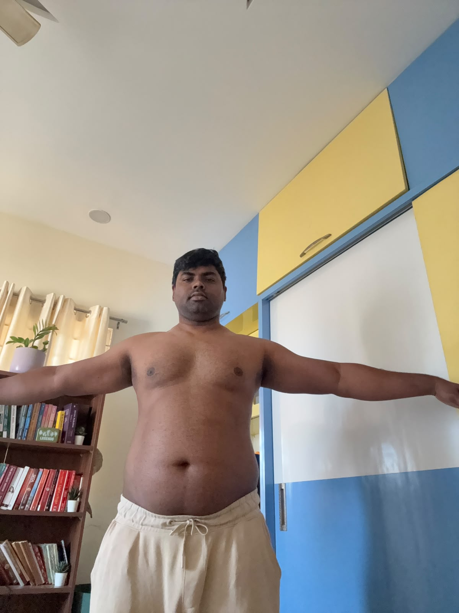

The starting line.
102.95 kg
Progress photo · Day 101 / Food
Breakfast
Poha, around half a plate; 1 small glass of watermelon juice; 2 egg whites.
≈ 260 kcalP 11gC 42gF 5g
Lunch
Rice (75 g cooked) with one serving of dal and raw banana dry sabzi.
≈ 460 kcalP 13gC 71gF 10g
Evening
1 cup coffee with milk and sugar.
≈ 90 kcalP 3gC 12gF 3g
Dinner
Vegetable pasta (150 g) with a small cup of homemade banana cake.
≈ 500 kcalP 11gC 80gF 16g
Approximate estimates; recipes and portions can change the numbers.
02 / Movement
- Incline dumbbell press3 sets × 16 reps · 10 kg per hand
- Incline dumbbell fly3 sets × 9 reps · 7.5 kg per hand
- Flat dumbbell bench press3 sets × 12 reps · 12.5 kg per hand
- Flat dumbbell fly press3 sets × 10 reps · 7.5 kg per hand
- Downward cable press3 sets × 12 reps · 10 kg per hand
- Cross trainer5 minutes · cardio finish≈ 35–60 kcal
- Chest session estimateResistance-training energy expenditure≈ 200–350 kcal
Calorie burn is a broad estimate and depends on pace, rest, and effort.